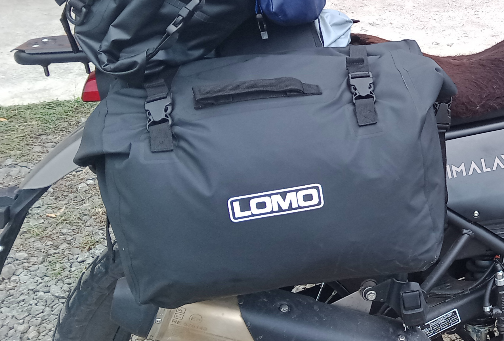

PANNIERS REVIEW
Lomo 60 L Dry Bag Panniers

I bought these Lomo 60 litre panniers whilst in Panama and this is the first set of “Dry bag” panniers that I have ever owned. They cost me around $70 and I managed to buy them online as they were not stocked by any of the local bike shops in Panama City.
The panniers have now been subjected to a great deal of exposure to prolonged heavy rain over the past few weeks and I must say that they have been 100% waterproof.
So far the fastenings are robust and fit for purpose. The large Velcro straps that hold both panniers together allowing them to be thrown over the back of the bike have sufficient adjustment so that I can keep the base of the pannier clear of the hot exhaust can on that side of the bike.
As long as I don’t put anything too heavy in the panniers the carrying handles allow both bags to be picked up and carried comfortably in one hand making it much easier to carry all of my bags to and from the bike when I stop.
I have not had need to use the securing straps that came with the panniers although on first glance they appear too long to be used with my Himalayan, but better too long than too short as I can always adjust them as necessary if and or when I need to use them.
In general I think that these panniers are of good quality, well designed, and extremely good value for money. As I use the panniers more I shall update this review as and when I have any other observations about them.
A link to the Lomo website where the panniers specifications etc. can be viewed can be found in my “Useful Links” page of this website.